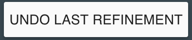
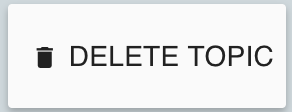
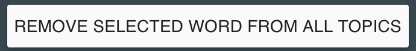
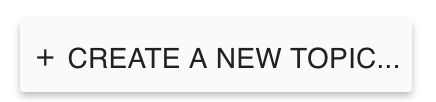

- To the right is a topic model that shows 10 topics the system has identified in a set of 2,225 news articles.
- The panel in the middle shows the 10 topics, each one labeled with the three words that the system thinks are most relevant to that topic.
- When a topic is selected, more detail is shown on the right: the 20 top (most relevant) words and the 20 top (most relevant) documents associated with that topic.
- Click Topic 1 and read through the words and documents for those topics. Do the same for Topic 8.
- Take a minute to explore through the topics, words, and documents.
- We can rename topics to help better remember what they are about, such as Topic 4, which appears to be about sports.
- Click Topic 4 and then click
- Change the text in the input from TOPIC 4 to SPORTS and click
- The name is now updated for the topic in the list.
- Hovering over one of the top 20 words will highlight it in the documents. Click Topic 8 and hover over the word 'fashion'.
- Clicking on a top word will keep it highlighted as you scroll through the documents. Click on the word 'art' in Topic 8.
- Topic models are not always perfect.
- Some words or documents may not make sense with the rest of the topic and should be removed.
- Words may be missing and should be added.
- A topic may include two distinct sub-topics, meaning that it should be split, or it may be similar to another topic, meaning that it should be merged with the other topic.
- Especially bad topics should be deleted entirely, and new topics should be created to capture themes that are missing.
- This tutorial will take you through nine possible ways to fix these and other problems.
- These refinements include: add word, remove word, trash word, change word order, remove document, split topic, merge topics, delete topic, and create new topic.
- It is possible that your refinements will not always be applied exactly as you expect, because the model incorporates them along with its understanding of all of the words and documents in the data.
- ADD WORD: add a word to the list of top words for a topic by clicking 'add new word' at the end of that list and then typing the word and pressing enter or selecting the match from the drop down menu.
- Click on Topic 2, which appears to be a topic about films and music.
- Add the word 'oscar' to Topic 2.
- The algorithm is working to update the model based on your change. Please wait while it finishes updating.
- Here is the updated model with your refinement applied.
- The word 'oscar' has been added to Topic 2.
- During the task, if you are not happy with the updated model, you can undo your change by clicking  at the top of the tool.
- DELETE TOPIC: Delete a topic by clicking to select the topic and then clicking  to the top right of the topic view.
- Let's delete Topic 7. Click to select Topic 7 and click .
- The algorithm is working to update the model based on your change. Please wait while it finishes updating.
- Here is the updated model with your refinement applied.
- Topic 7 has been deleted and the model now has one less topic than before.
- ADD WORD TO TRASH: Sometimes there are words that don’t belong in any of the topics of the model. You can remove a word from all topics in the model by adding it to the trash, and you do so by selecting a word and then clicking at the top-right of the page.
- Add the word 'nbsp' to the trash, since it is a text processing error and is not meaningful for any of the topics in the model. First click Topic 1 and then click the word 'nbsp'. Finally, click
- The algorithm is working to update the model based on your change. Please wait while it finishes updating.
- Here is the updated model with your refinement applied.
- The word 'nbsp' has been added to the trash and therefore removed from all topics in the model.
- CHANGE WORD ORDER: Reorder a word to emphasize its relative importance by dragging it to a different position in the top words list.
- Let's make the word "album" more important to Topic 2. Click Topic 2.
- Now, drag the word 'album' so that it’s the third most important word in the topic behind 'music' and before 'oscar'.
- The algorithm is working to update the model based on your change. Please wait while it finishes updating.
- Here is the updated model with your refinement applied.
- REMOVE WORD: remove a word from a topic by clicking next to the word in the top words list.
- The word 'schools' doesn't belong with the other words in Topic 3. Remove the word 'schools' from Topic 3.
- The algorithm is working to update the model based on your change. Please wait while it finishes updating.
- Here is the updated model with your refinement applied.
- Remember:
- Removing a word by clicking next to it removes that word from a single topic.
- Trashing a word by selecting it then clicking removes it from all topics.
- REMOVE DOCUMENT: Click next to a document to remove it from a topic.
- Click Topic 6, which appears to be about government and laws. Remove the fourth document, which is about the Grammy awards and doesn't belong with the rest.
- The algorithm is working to update the model based on your change. Please wait while it finishes updating.
- Here is the updated model with your refinement applied.
- MERGE TOPICS: Similar topics can be merged.
- Both Topic 2 and Topic 8 appear to be about art and entertainment, so let's merge them. First click Topic 2, then click
 . Now,
click to select Topic 8 and press
. Now,
click to select Topic 8 and press
to complete the merge.
- The algorithm is working to update the model based on your change. Please wait while it finishes updating.
- Here is the updated model with your refinement applied.
- Topic 2 and Topic 8 have been merged into TOPIC 2_TOPIC 8, and the model now contains one less topic than before.
- CREATE NEW TOPIC: Create a new topic by clicking  at the bottom of the topic list and adding a few words to describe it.
- Remember to press 'Enter' or select the matching word from the drop down after typing each word.
- You should provide at least 3 words to create a new topic. If you provide more words, the system will be able to create a better topic for you.
- Let's create a new topic about technology. Click .
- Add the word 'iphone', add the word 'mobile', add the word 'internet', and add the word 'facebook' to the new topic.
- Click
- The algorithm is working to update the model based on your change. Please wait while it finishes updating.
- Here is the updated model with your refinement applied.
- Your new topic is at the end of the list and the model now contains one additional topic than before
- SPLIT TOPIC: a topic can be split into two smaller sub-topics.
- Let’s split Topic 5, which appears to be about banking and business topic into topics about banking and business, respectively. click Topic 5 then click

- The topic words can now be placed in sub-topic 'A' or sub-topic 'B'.
- Drag the words about business (like 'company', 'companies' and 'business') into sub-topic 'B' and leave the words more about banking in sub-topic 'A'. When you are done, press
.
- The algorithm is working to update the model based on your change. Please wait while it finishes updating.
- Here is the updated model.
- The model has one additional topic than before because the banking and business topic (Topic 5) was split into two separate topics.
- Sub Topic 'A' remained as Topic 5 and Sub Topic 'B' became SPLIT_FROM_topic 5.
- Let's undo this change by clicking at the top of the tool.
- This is the model after undoing the last refinement.
- You've now seen the nine different changes you can perform in the tool: add word, remove word, trash word, change word order, remove document, delete topic, create topic, merge topic, split topic.
- Remember that the system may not always apply your refinements as you expect, because they are incoporated along with the system's understanding of all of the words and documents in the data.
- And, remember that if you are unhappy with the topics after an update you can undo any change by clicking at the top of the tool.
- It may take many rounds of applying these changes before you are happy with the model.